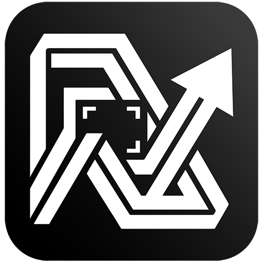

Конвертация
Файлы и папки
- Отдельный файл или целая папка
- Вложенные папки и сохранение их структуры
- Параллельная обработка на всех ядрах
- Существующие файлы не перезаписываются
- Готовые результаты не конвертируются повторно
Переводит фотографии и картинки между двадцатью с лишним форматами. Отдельные файлы или целые папки, на всех ядрах процессора и без подключения к интернету.

Как это работает
Укажите файл или папку, выберите формат и качество. Программа обработает файлы параллельно и ничего не перезапишет: при совпадении имени к новому файлу добавится суффикс.
Файлы и папки
Magick.NET и Ghostscript
Удаление оригиналов по умолчанию выключено. Если его включить, исходный файл перемещается в корзину и только после того, как все результаты записаны на диск.
Форматы
Установка
Для Windows 10/11 x64
Сборка не подписана сертификатом: при первом запуске Windows покажет «Неизвестный издатель». Нажмите «Подробнее», затем «Выполнить в любом случае».